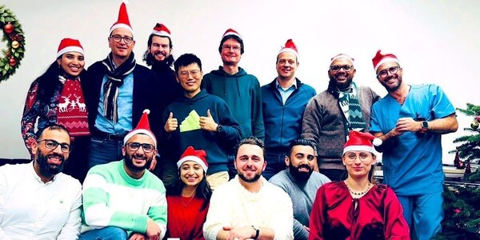

Dr. Vidhya Madapusi Ravi
Leads the 3D-Brain Models Lab in the Department of Neurosurgery, University Hospital Freiburg. Her work keeps human cortical tissue alive ex vivo and uses it to understand glioblastoma and the glia around it.
Career
- 2023–Principal Investigator, 3D-Brain Models Lab, Neurosurgery, Freiburg
- 2018–22Junior Principal Investigator, Neurosurgery, Freiburg
- 2017–18Postdoctoral researcher, Section for Neuroelectronic Systems, Freiburg
- 2016Postdoctoral researcher, Leibniz-FMP, Berlin
Education
- 2012–16PhD, Biophysics and Biochemistry, Universitat Autònoma de Barcelona. Cum Laude with honours; AGAUR thesis prize
- 2007–09MSc Bioinformatics, University of Madras
- 2004–07BSc Chemistry, University of Madras
Roles
Reviewer for
Funding and awards
- 2024State funding from Baden-Württemberg for brain tumour research with human tissue instead of animal experiments (press release).
- 2024DFG large-instrument grant for a compact live-cell microscope.
- 2023–28Fondazione AIRC grant, "Boosting protective immunity with the recombinant protein CTX-CNF1 to treat glioblastoma", with Dr. Eleonora Vannini.
- 2023–25DFG research grant (Deutsche Forschungsgemeinschaft).
- 2023Neuro-Oncology Advancement Award.
- 2022EANO Youngster Award for outstanding publication in the field of neuro-oncology, European Association of Neuro-Oncology, Vienna.
- 2021–22Junior Fellowship, Freiburg Institute for Advanced Studies (FRIAS).
- 2016AGAUR thesis prize for outstanding doctoral candidates, Barcelona.
- 2012–16Generalitat de Catalunya FI fellowship for early-stage researchers.
The lab

Alumni and guests
Junyi Zhang (guest student; best poster, NGI 2022) · Dr. Giuseppina Catanzaro (guest researcher, Italy) · Laurin Ganser (Bachelor thesis) · Mathieu Larroquette (visiting PhD student) · Tao Peng (guest student) · Youran Kong (guest student)
Join the lab
We are looking for researchers who want to work on human brain tissue: PhD students, postdocs and visiting scientists with a background in neuroscience, neuro-oncology, tumour immunology, tissue culture, or spatial and single-cell omics. The team is small, international and sits inside a neurosurgical department, so tissue, clinicians and questions are close at hand.
Write to vidhya.ravi@uniklinik-freiburg.de with a short description of what you want to work on and a CV.
Where we are
Klinik für Neurochirurgie im Neurozentrum, Universitätsklinikum Freiburg, Breisacher Straße 64, 79106 Freiburg im Breisgau, Germany.